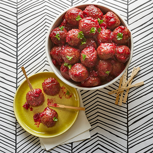
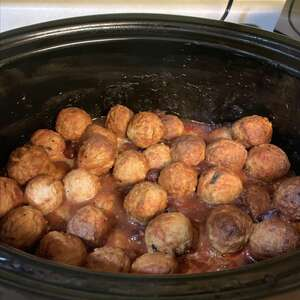

Crock Pot Party Meatballs


Juicy, delicious, easy to make party Meatballs!
Ingredients:
- 1(2 pound)bag frozen cooked meatballs
- 1(14.5 ounce) can whole berryr cranberry sauce
- 1(12 ounce) bottle tomato-based chili sauce
- 1/2 lemon, juiced
- 2 drops hot sauce (such as Tabasco), or more to taste
Steps on how to prepare:
- Place frozen meatballs into a slow cooker. Add cranberry sauce, chili sauce, lemon juice, and hot sauce. Stir to distribute sauce evenly over meatballs.
- Cook on High until meatballs are completely thawed and hot, about 3 hours.
Nutrition Facts
Per Serving 320 calories; protein 19.1g; carbohydrates 27.3g; fat 14.6g; cholesterol 94.3mg; sodium 210.4mg.
Click to return Home